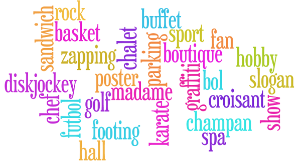

Influencia del alemán
en otras lenguas
Historia e influencia de la lengua alemana
Prof. María Ballesteros Cózar
Índice de contenidos
Coexistencia y contacto
entre lenguas
1. Por su genealogía e idiomas que le anteceden
- Ej. el italiano y el hindi están emparentados, pero sus semejanzas no son apreciables debido a que estas se han ido perdiendo paulatinamente.
El estudio de las lenguas antecesoras permite identificar su origen común.
italiano -> latín: pater
hindi -> sánscrito: pitar
2. Por los cognados entre los idiomas actuales
- Los cognados aparecen en los idiomas actuales mostrando esta conexión genética entre ellos.
- Son la clara evidencia de pertenencia a la misma rama lingüística. Las formas de las palabras son casi idénticas, por lo que su conexión es más clara.
mother (inglés) | Mutter (alemán) -> rama germánica
amico (italiano) | amigo (español) -> rama itálica
Emigración de las lenguas
Emigración de las lenguas
- Las lenguas tienen la capacidad de transformarse, de evolucionar y, además, de influir en otras.
(hacia dentro: misma familia, hacia afuera: diferente familia) - Si esta influencia se produce hacia afuera, se puede considerar que la lengua "ha emigrado".
Ej. las palabras inglesas utilizadas en el español.
(Rama germánica -> rama itálica)
¿Cuáles son los motivos de esa emigración?
- La emigración se debe a que las lenguas compartidas de un país o países influyen en otras.
- En relación con muchos ámbitos, como la política, tecnología, filosofía, arte, literatura, etc.
- Con respecto a la lengua alemana: Palabras relativas a la filosofía o con significados militares se utilizan muy a menudo en otros idiomas.
Ej. Strafe (alemán) -> to strafe (inglés)
- Según el Dr. Armin Burkhardt, profesor universitario de Germanística en la Universidad Técnica de Braunschweig:
"Las razones de este fenómeno tienen que ver, en su mayoría, con lagunas en el propio vocabulario, con la adopción de denominaciones extranjeras propias de ese idioma, o incluso con la mera inquietud de jugar con lo extraño".
Durante el proceso
- Cuando la emigración ocurre, hay un contacto directo entre dos o más idiomas.
- Consecuentemente, se pueden encontrar las mismas palabras en diferentes lenguas. A menudo con alteraciones en sus significados.
Ej. la palabra alemana Nachspiel (epílogo), en noruego adquiere una connotación festiva.
- Con la migración lingüística, algunos fenómenos lingüísticos participan en la lengua, creando neologismos con préstamos y extranjerismos, entre otros.
- Se puede decir que estos fenómenos en las lenguas son consecuencia del proceso de emigración.
Consecuencias lingüísticas
Consecuencias lingüísticas
- El neologismo responde a la formación de nuevos términos por combinación de elementos ya existentes o transferencia de significados, así como por la derivación o traducción de una lengua extranjera.
- Es un fenómeno muy común que está ligado a la cultura y sociedad.
Por ejemplo: Brunch en inglés
(entre el desayuno y el almuerzo)
Tipos de neologismos
- Palabras nuevas: palabras que son completamente nuevas y que no existían antes de esa forma.
La palabra brunch puede ser considerada como tal.
Otro ejemplo: el verbo simsen (escribir un SMS).
- Nuevos significados: un término que ya existe adquiere un significado adicional.
Ejemplo: El ratón es, por un lado, un roedor y, en informática, también un dispositivo de entrada.
- Nueva combinación: palabras existentes que se combinan de nuevo añadiéndole pequeños matices o diferentes contextos.
Ejemplo: Un café que permite a sus visitantes utilizar ordenadores con conexión a Internet es un cibercafé.
- Préstamos: palabras tomadas de otra lengua que han sido adaptadas fonética y ortográficamente al idioma que las recibe.
Ejemplos: palabras como Fenster (ventana) del latín fenestra o Mauer (muro) del latín murus, etc.
- Extranjerismos: son palabras tomadas literalmente de otro idioma, manteniendo su grafía y pronunciación original.
Ejemplos: Terrasse, Diskussion, Hypothese, etc.

Palabras alemanas en otros idiomas
Palabras alemanas en otros idiomas

Palabras alemanas en otros idiomas

,,Keine Zeit und keine Macht zerstückelt geprägte Form, die lebend sich entwickelt.’’ (GOETHE)
"Ningún tiempo y ningún poder destruye la forma acuñada, que viviendo se desarrolla." (GOETHE)